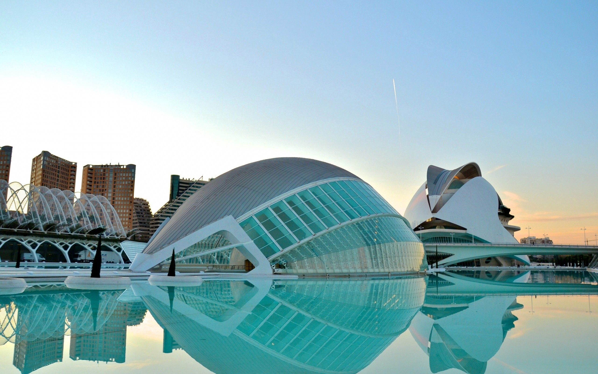

a arquitectura industrial o también llamada arquitectura del hierro, tiene su auge en el siglo XIX tras la Revolución Industrial. El origen de este estilo arquitectónico viene precedido por la incorporación de materiales como el hierro, el acero laminado, el hormigón armado y el vidrio.
Ya en el siglo XVIII, la arquitectura fue el arte más social, es decir, el más concienciado y adecuado a las condiciones sociales, económicas y materiales de la época. A principios de siglo, seguían imperando los estilos Barroco y Rococó como herencia del siglo XVII, pero ya a mediados de siglo, empezó a imperar la razón. La arquitectura se desvistió de ornamentación, imperando un estilo racionalista, bello, pero también necesario. Priorizaron lo simple y barato, a lo superfluo y caro.

La configuración de la nueva fábrica ya no es impuesta desde el exterior, sino que es el funcionamiento global el que la conforma. Sin esta forma necesaria, la máquina global ya no podría funcionar, pudiendo considerarse el conjunto como un objeto técnico concreto. Así, los nuevos edificios, diseñados más precisamente para su función, fueron rápidamente obsoletos. ¿Por qué? Porque había un nuevo y moderno parámetro para lo funcional: los edificios no debían solo acomodarse a los cambios sino anticiparse a ellos.
Este era el nuevo funcionalismo de la flexibilidad total. Luego de los años 70 hubo nuevos rumbos en la arquitectura industrial pero el legado de la antelación fue y será una constante en esta tipología.